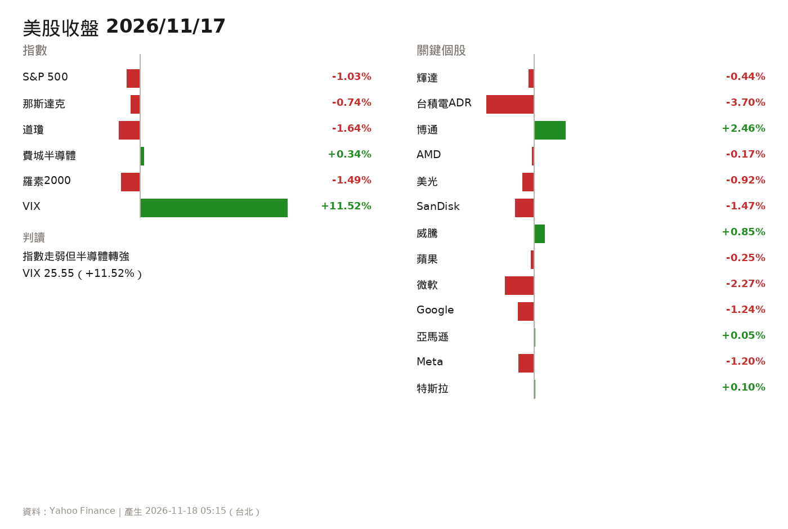
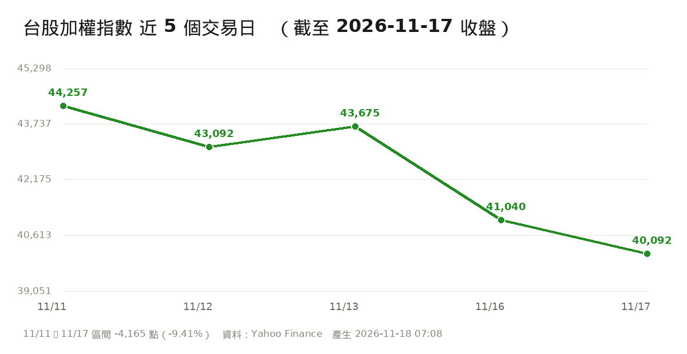

| 排程 | 狀態 | 說明 |
|---|---|---|
| 危機警報 盤中每5分 | ✅ 正常 | 09:00 起每 5 分掃描（L1 60 分／L2 20 分／L3 8 分重發） |
| 危機警報 影片檢查 22:20 | ✅ 正常 | 昨日 22:20 執行成功 |
| 頻道逐字稿歸檔 22:00 | ❌ 連續 3 晚失敗（interrupted） | 昨晚只完成 Emmy EP.179（23:24），一綺／宏爺沒抓到新片。原因是 4GB RAM 滿載被 OOM 殺掉（whisper＋截圖＋留言同時跑） |
| 粉專貼文抓取 06:20 | ⚠️ 已修好 | 今早 06:20 仍失敗（cron 直譯器找不到 websocket 模組），07:02 已手動補抓，並改寫腳本加路徑 fallback，07:05 用排程重跑測試已成功 |
白話：警報本身沒問題，但「昨晚頻道筆記」只有 Emmy 一家有更新，一綺與宏爺最新的還停在 11/13、11/16。
來源：
財經頻道/Emmy追劇時間/Emmy重點提醒追蹤.md。未解除就會每天出現；判定解除當天標「過期」，隔天起不再列出。
來源：
財經頻道/週報/2026-W46.md（11/15 產出，彙整 11/09～11/15）。這是上週的總結，不是今天的新資料。
完整檔案：
日報/素材/2026-11-18_盤前預警.md。等級 L1（規則門檻道瓊 -1.5% 觸發），但實質風險高於字面——VIX 25.46（+11.13%）、S&P 連四跌、今天是台指期結算日。
① 美股昨夜（已發生）：道瓊 -1.64%、S&P -1.03%、那斯達克 -0.74%，但費半逆勢 +0.34%（結束三連跌）。輝達 155.46（-0.44%），財報後盤後 160.66（+3.34%）。台積電 ADR 359.69（-3.68%），盤後 +1.53%。
② 原因：CNN 報導國安局（NSA）網路中斷（消息面、未經證實）→ 財報前的「不敢抱」＋治理折價（已發生）→ 道瓊跌的是 Salesforce -9.45%、Nike -6.30% 這類財報個股，不是半導體（已發生）→ 10 年期殖利率 5% 以上壓估值（已發生）→ 05:20 輝達財報三項超預期（已發生）。
③ 影響期間：短期 1~2 週偏多但不追高（財報剪掉「需求斷裂」的尾巴，但 11/18 結算、11/19 Anthropic 掛牌、11/24 Dell／HP 財報會消耗反彈力道）；中期 1~3 個月「營收成長、毛利率下滑」的財報季；長期 BIS 新規是制度性切割，不會一季恢復。
④ AI 建議（你目前空手）：今天不追高、不殺低。開高是「利空出盡」的反彈，不是趨勢翻多。若開高後 10:00 前站不上 40,600，把反彈當調節點看。停損參考（以 11/17 收盤 -7% 暫代）：2330 → 2,018、2454 → 3,571、8299 → 1,427。
⑤ YouTube 建議：Emmy EP.179 的五個危機（BIS 132 頁、漲價能力到頂、泡沫時表延到 2027 下半年、這是熊市不是金融危機、Anthropic 的帳），以及她的動作「慢慢出清 AI 持股、11/19 到 12 月初是最好的減碼窗口」。
⑥ 新聞／券商：偏多（台新沈建宏「12 月到 2027 Q1 仍有表現空間」）、中性（摩爾林漢偉「18 日後轉折，看 37,837 是否有效低點」）、偏空（群益范振鴻「兩階段下修明後年展望」）；美銀調查科技股淨加碼由 37% 降到 12%（20 年最大減碼），但同一家美銀重申台積電目標價 3,260 元。
| 項目 | 狀態 | 說明 |
|---|---|---|
| 輝達 Q3 財報 | 已發生 | 營收 1,158.4 億（預估 1,091 億）、淨利 653 億、EPS 2.68（預估 2.48）、資料中心 1,076.1 億（+110%）、Q4 財測 1,300 億±3%（不含中國資料中心），毛利率 74.9%、Q4 指引 71~72%（符合共識）。盤後 +3.34% |
| 黃仁勳願回任輝達 CEO | 消息面 | 11/17 透過 WSJ 發聲明表達意願，屬「他願意」。董事會尚未考慮、獨立調查未結束、貝森特主張找外部人選 → 不是已發生的人事案 |
| BIS 132 頁晶片新規 | 已發生 | 11/17 凌晨正式公布，五國納入；晶圓廠與封裝廠對這五國 IC 設計公司出貨須申請許可；1,200 萬 TPP 以上算力輸出中國須許可。這是台積電與日月光直接相關的行政成本 |
| Vera Rubin 延後放量 | 消息面（出現反證） | 傳聞稱延到明年上半年；但法說說「爆發性開局、史上爬坡最快」，卻沒給具體時程 → 未證實也未否認，別當事實交易 |
| Anthropic 11/19 掛牌 | ⏳ 還沒發生 | 每股 70~78 美元、目標估值 1.4 兆美元（Emmy EP.179）；超額認購與綠鞋動機是她的看多理由，但掛牌後走勢才是答案 |
怎麼用：今天唯一「已發生且會改變基本面」的是輝達財報（需求沒斷）與 BIS 新規（成本增加）；「黃仁勳回任」與「Vera Rubin 延後」都是消息面，用它們追高或殺低的勝率最低。
台股溫度 33／100（偏冷）：輝達財報把「AI 需求斷裂」這條最壞的尾巴剪掉了，今天開高機率高，但 41,000 已失守、外資連 2 賣 1,082.8 億、台指期 97,896 口空單要在今天結算——這是「利空出盡的反彈」，不是「趨勢翻多」，你空手，正確動作是看它能不能站回 40,600，而不是跳進去追。
今天的三個數字：加權 40,092.11（-2.31%）、成交 9,977 億、外資 -380.94 億（連 2 賣）。
🎒 JNA-202 PRO 快取單肩包：目前最低 2,800（蝦皮全新），目標 1,500，還差 1,300，未達標。
美股為 11/17（二）收盤（已發生）；盤後為輝達財報後約 05:20 的報價。

| 指數 | 收盤 | 漲跌點 | 漲跌% |
|---|---|---|---|
| 道瓊 | 50,759.42 | -848.75 | -1.64% |
| S&P 500 | 7,340.53 | -76.06 | -1.03% |
| 那斯達克 | 24,328.38 | -181.38 | -0.74% |
| 費城半導體 | 9,642.88 | +32.23 | +0.34%（結束三連跌） |
| 羅素 2000 | 2,701.87 | — | -1.50% |
| VIX | 25.46 | +2.55 | +11.13% |
| 股票 | 收盤（美元） | 漲跌% | 一句判讀 |
|---|---|---|---|
| 輝達 NVDA | 155.46 | -0.44% | 財報前收黑，盤後 +3.34% 至 160.66，是今天的多頭火種 |
| 台積電 ADR TSM | 359.69 | -3.68% | 殺最重，但折台股 2,367.76 元，對 2,170 仍溢價 9.11% |
| AMD | 503.41 | -0.17% | 幾乎平盤，守住 500 關卡 |
| 博通 AVGO | 341.60 | +2.46% | ASIC／網通逆勢最強，市場在押「去 GPU 化」 |
| 高通 QCOM | 166.67 | -1.10% | 手機鏈偏弱，無新題材 |
| 應用材料 AMAT | 349.23 | -0.29% | 設備股止穩，是費半收紅的主因之一 |
| 美光 MU | 712.42 | -0.92% | 記憶體沒有再破底，但反彈無力 |
| SanDisk SNDK | 797.24 | -1.47% | NAND 仍在修正，對 8299 是壓力 |
| 聯電 ADR UMC | 14.14 | -1.39% | 成熟製程沒人青睞 |
| 日月光 ADR ASX | 31.83 | -2.96% | BIS 新規直接點到封裝廠，這是它比其他 ADR 弱的原因 |
| CoreWeave CRWV | 49.89 | +0.02% | 輝達持股公司，盤後跟漲約 2% |
| Marvell MRVL | 148.74 | +2.33% | 光通訊／客製晶片同族群走強 |
| 英特爾 INTC | 55.17 | -0.49% | 無戲 |
| 蘋果 AAPL | 351.91 | -0.25% | 防禦性出現 |
| 微軟 MSFT | 506.24 | -2.27% | 巨頭最弱，AI 資本支出疑慮直接打它 |
| Google GOOGL | 280.20 | -1.24% | TPU 題材敵不過大盤 |
| 亞馬遜 AMZN | 257.89 | +0.05% | 小紅，AWS 採購成本可控的說法有撐 |
| Meta META | 618.87 | -1.20% | 跟跌 |
| 特斯拉 TSLA | 380.11 | +0.10% | 小紅，與 AI 鏈脫鉤 |
上漲的部分（別只看跌）：博通 +2.46%、Marvell +2.33%、特斯拉 +0.10%、亞馬遜 +0.05%、CoreWeave +0.02%——19 檔有 5 檔收紅，費半還漲 0.34%。跌的是權值、記憶體與封裝，漲的是 ASIC／網通。這是「資金換位置」，不是「全面崩盤」；台股今天要看的也是同一件事：錢有沒有從權值流向 ASIC／IP。
| 項目 | 數值 | 漲跌% |
|---|---|---|
| 美 10 年期殖利率 | 5.10% | -0.35% |
| 美 5 年期殖利率 | 4.90% | -0.71% |
| 美元指數 | 103.56 | +0.01% |
| 布蘭特原油 | 93.07 | -0.08% |
| WTI 原油 | 85.61 | -0.47% |
| 黃金 | 3,851.90 | -0.32% |
| 美元／台幣 | 32.91 | -0.15% |
| VIX | 25.46 | +11.13% |
上漲主因：輝達 Q3 三項超預期＋Q4 財測 1,300 億（不含中國）→ 盤後 +3.34%，把「AI 需求突然斷裂」的機率往下調；費半收紅、記憶體止穩是同一件事的證據。下跌主因：道瓊的 25 檔成分股下跌（Salesforce -9.45%、Nike -6.30%）、10 年期殖利率仍在 5% 以上、VIX 漲 11%。

盤勢節奏（11/17）：開低 → 早盤崩跌 1,253 點、下探 39,786.45 → 國安基金等政府資金 17 分鐘內急拉翻紅至 41,533.84 → 尾盤賣壓再現 → 收 40,092.11（-947.97 點／-2.31%）。單日震盪 1,747.39 點，史上第 10 大，成交 9,977 億。連 2 日合計跌 3,583 點（-8.2%）。
| 項目 | 數值 | 說明 |
|---|---|---|
| 加權指數 | 40,092.11 | -947.97 點／-2.31% |
| 成交金額 | 9,977.38 億 | 不含鉅額 9,617.95 億（經濟日報記約 1.01 兆） |
| 三大法人 | 賣超 547.25 億 | 外資 -380.94、投信 -9.35、自營 -156.96（經濟日報版本合計 -576.1 億，差異在投信認列） |
| 外資連續 | 連 2 賣 | 累計 -1,082.83 億 |
| 八大公股 | 買超 101.6 億 | 連 2 買共 373.2 億 |
| 融資餘額 | 5,087.2 億 | 單日 -157.7 億（7/31 以來低量） |
| 台指期 | 40,073（-708） | 逆價差收斂至 19.11 點；外資淨空單 97,896 口（+1,109） |
| 漲停／跌停 | 6 家／31 家（上市） | 前一日 8 家／85 家，恐慌降溫但沒轉多 |
技術面：41,000 已失守，季線約 46,000 上方（低約 13%），年線 39,210（只高 2.2%）。下方三道防線：39,786（11/17 低）→ 39,210（年線）→ 37,837（11/6 低點）。上方壓力 41,000 → 41,533。
今天的三個觀察點：① 開高後 10:00 前能否站上 40,600；② 台積電 2,200 保不保、能否收復 2,250；③ 結算後（13:30 之後）外資 12 月合約新空單的口數——那才是真方向的答案。
昨晚 22:00 歸檔只有 Emmy EP.179 完成；一綺最新 11/13、宏爺最新 11/16（22:00 連續 3 晚 interrupted）。
財經頻道/宏爺講股/2026-11-16_股市又暴跌出大事了/）。兩家衝突點：一綺說「2454 是轉單受惠、可分批加碼」，Emmy 說「慢慢出清 AI 持股、反彈是逃生窗口」。時間尺度不同（一綺看 1~2 週，Emmy 看 1~2 季），不是誰對誰錯——但對你的意義是：反彈用來調整結構，不是把部位加回去。
| 集數 | 危機詞（跌／危機／泡沫／熊市…） | 看多詞（漲／看好／反彈／機會…） | 語氣判讀 |
|---|---|---|---|
| Emmy EP.179（11/17） | 27（跌 10、危機 10、泡沫 5、熊市 2） | 31（漲 19、機會 5、反彈 4） | 中性偏保守，危機詞已是近期最高，但仍有「反彈窗口」的看多語句 |
| 一綺 2026-11-13 | 6 | 22 | 明顯偏多（當天 +583 點），她的看多是「盤面給的」 |
| 宏爺 2026-11-16 | 18 | 12 | 偏空，且是三家裡唯一出現「減碼」字眼的 |
語氣判讀：Emmy 的危機詞數量已是 11/12 以來最高，但她的結論不是「全面看空」，而是「有反彈、但反彈要減碼」。這種語氣最容易讓人誤判成「可以撿」，實務上要當成「有機會跑，不是有機會進」。
2026年11月13日 黃仁勳下台後 台廠利多還是利空？ASIC 全面噴出、景碩怎麼了
🔗 筆記：財經頻道/一綺聊股/2026-11-13_黃仁勳下台後台廠利多/筆記.md
來源：
持股/2330_台積電.md、持股/2454_聯發科.md、持股/8299_群聯.md，三檔的成本與股數仍是「（填）」空白，所以算不出損益與停損價。依 11/17 日報與今天盤前預警的紀錄，你目前空手（現金 100%）；若本週已重新建倉，請把成本與股數補上，我明天就能算真實停損。
| 股票 | 11/17 收盤 | 漲跌 | 外資買賣超 | 我的判讀 |
|---|---|---|---|---|
| 2330 台積電 | 2,170 | -45 元／-2.03% | -14,606 張（連 4 賣） | ADR 折台股 2,367.76 元、溢價 9.11%，外資沒放棄基本面但現貨一直賣；今天看 2,200 能否守住 |
| 2454 聯發科 | 3,840 | +45 元／+1.19% | -2,143 張（連 2 賣） | 11/17 是推升指數第一名（+22.08 點），ASIC 轉單邏輯仍是最強的一條線 |
| 8299 群聯 | 1,535 | +20 元／+1.32% | +1,266 張（連 5 買） | 三檔裡「公司派最用力、外資研究最看空」的矛盾組合；庫藏股已買 1,602 張、12/15 除息 60 元 |
逐檔處置（條件成立才做，不是預測）
更新 11-18 07:09｜資料 BigGo／飛比。JNA-202 PRO 官方是「快取單肩包」。
| 品項 | 全新最低 | 福利品 | 二手 | 距目標 |
|---|---|---|---|---|
| JNA-202 PRO 快取單肩包 | 2,800 | 2,940 | — | 還差 1,300 |
未達標：目前最低仍高於 1,500 元，繼續追。
| 代碼 | 名稱 | 現價 | 漲跌 | 成交量 |
|---|---|---|---|---|
| 2330 | 台積電 | 2,170.0 | -2.03% | 54,637 張 |
| 2308 | 台達電 | 1,055.0 | -5.80% | 23,210 張 |
| 2454 | 聯發科 | 3,840.0 | +1.19% | 14,405 張 |
| 3443 | 創意 | 6,975.0 | -10.00% | 3,410 張 |
| 2383 | 台光電 | 3,540.0 | -6.72% | 5,588 張 |
| 2408 | 南亞科 | 329.0 | -3.24% | 50,988 張 |
| 3037 | 欣興 | 637.0 | -9.90% | 36,480 張 |
| 1802 | 台玻 | 69.0 | -9.92% | 152,791 張 |
| 1303 | 南亞 | 261.5 | -4.56% | 117,126 張 |
| 2327 | 國巨* | 361.0 | -3.48% | 56,137 張 |
| 2368 | 金像電 | 835.0 | -9.92% | 10,419 張 |
| 2344 | 華邦電 | 110.5 | -2.21% | 65,064 張 |
| 代碼 | 名稱 | 今日 | 連續 | 近 5 日累計 | 近 10 日累計 |
|---|---|---|---|---|---|
| 2408 | 南亞科 | +1,104 | 買超 1 天 | +12,690 | +6,151 |
| 2308 | 台達電 | +259 | 買超 1 天 | -9,507 | -20,379 |
| 3037 | 欣興 | +4,406 | 買超 1 天 | -5,719 | -28,643 |
| 2327 | 國巨* | +2,661 | 買超 1 天 | +5,434 | -6,637 |
| 2368 | 金像電 | +282 | 買超 1 天 | -1,262 | -3,630 |
| 2383 | 台光電 | +1,177 | 買超 1 天 | +55 | -4,285 |
| 1802 | 台玻 | -23,250 | 賣超 3 天 | +118,782 | +163,427 |
| 1303 | 南亞 | -4,363 | 賣超 5 天 | -53,495 | -69,510 |
| 2330 | 台積電 | -14,606 | 賣超 4 天 | -23,608 | -95,249 |
| 2344 | 華邦電 | -70 | 賣超 1 天 | -7,460 | -32,859 |
| 2454 | 聯發科 | -2,143 | 賣超 2 天 | +302 | -16,841 |
| 3443 | 創意 | -237 | 賣超 1 天 | -222 | -1,796 |
法人資料截止：2026-11-17（TWSE T86）｜報價時間 13:30:00
判讀：12 檔有 6 檔外資轉買（南亞科、欣興、國巨、台光電、台達電、金像電），但買超都在 1 天——這叫「結算前的回補」，不叫轉向。真正的訊號是 2330 連 4 賣、2454 連 2 賣，權值還在被提款。
追蹤 5 檔 AI／半導體 ETF（5 家不同發行商）的前 25 大持股；≥4 檔同時持有才列入。 ETF：SMH、SOXX、XLK、QQQ、VGT ｜ 查詢：2026-11-18 07:11
| 股票 | 名稱 | 持有 ETF 檔數 | 哪幾檔 | 合計權重 |
|---|---|---|---|---|
| NVDA | NVIDIA Corporation | 5 | QQQ、SMH、SOXX、VGT、XLK | 59.8% |
| AMD | Advanced Micro Devices | 5 | QQQ、SMH、SOXX、VGT、XLK | 28.4% |
| AVGO | Broadcom Inc. | 5 | QQQ、SMH、SOXX、VGT、XLK | 27.0% |
| MU | Micron Technology | 5 | QQQ、SMH、SOXX、VGT、XLK | 23.2% |
| TXN | Texas Instruments | 5 | QQQ、SMH、SOXX、VGT、XLK | 15.7% |
| INTC | Intel Corporation | 5 | QQQ、SMH、SOXX、VGT、XLK | 13.4% |
| AMAT | Applied Materials | 5 | QQQ、SMH、SOXX、VGT、XLK | 12.3% |
| LRCX | Lam Research | 5 | QQQ、SMH、SOXX、VGT、XLK | 11.4% |
| ADI | Analog Devices | 4 | SMH、SOXX、VGT、XLK | 12.2% |
| QCOM | Qualcomm | 4 | SMH、SOXX、VGT、XLK | 10.9% |
| KLAC | KLA Corporation | 4 | SMH、SOXX、VGT、XLK | 10.5% |
| MRVL | Marvell Technology | 4 | SMH、SOXX、VGT、XLK | 8.2% |
12 檔符合 ≥4 檔 ETF 共識
（與上次相比，這 5 檔 ETF 的前 25 大持股沒有變動）
⚠️ 這是「被動資金需求」的參考，不是買進建議。ETF 納入常發生在股價已漲之後，刪除則常在跌完之後。台股 ETF 目前尚未接入（發行商持股為 JS 載入）。
| 面向 | 內容 |
|---|---|
| S 優勢 | 你目前空手（現金 100%），這在 -8.2% 的兩天裡是最強的優勢；三檔的基本面資料都在追蹤中，沒有被套牢的部位要救 |
| W 劣勢 | 持股檔的成本與股數仍空白，算不出自己的停損價——紀律第一條（-7% 無條件賣）今天無法執行，因為沒有成本 |
| O 機會 | 輝達財報剪掉「需求斷裂」的尾巴；費半收紅、ASIC／網通（博通、Marvell）逆勢；台積電 ADR 溢價 9.11%，是外資還沒放棄的證據；國安基金與八大公股連 2 買 373.2 億 |
| T 威脅 | 41,000 已失守、外資連 2 賣 1,082.8 億、台指期 97,896 口空單今天結算、VIX 25.46、BIS 新規的許可制（E2）、記憶體成本壓力（E7）、11/19 Anthropic 掛牌與川習普會是下一個變數 |
| 日期 | 市場 | 事件 | 為什麼重要 |
|---|---|---|---|
| 11/18（三） | 台股 | 台指期 11 月合約結算（13:00-13:25 均價定結算價） | 外資 97,896 口淨空單要轉倉，波動放大、方向不一定 |
| 11/18（三） | 台股 | 台達電、廣達、日月光等法說會（媒體整理，非公司公告彙整） | 電子權值與封測的第四季展望 |
| 11/19（四） | 美股 | Anthropic 在那斯達克掛牌（每股 70~78 美元、目標估值 1.4 兆美元，Emmy EP.179） | AI 融資熱潮還在不在，看這一天 |
| 11/19（四）凌晨 03:00 | 美股 | FOMC 10 月會議紀要（美東 11/18 公布，日期待官方確認） | 12 月升不升息的線索 |
| 11/19~11/20 | 國際 | 川普、習近平、普丁深圳 APEC 場邊三方會談 | BIS 新規會不會再加碼 |
| 11/24（一） | 美股 | Dell、HP 財報 | AI 伺服器需求第一次由買方講出來 |
| 11/27（五）13:30 | 台股 | 群聯受邀富邦證券投資論壇（公開資訊觀測站公告） | 8299 的公司級消息點 |
| 12/01（一） | 美股 | Marvell 財報 | 光通訊／客製晶片的需求驗證 |
| 12/15（一） | 台股 | 群聯除息 60 元 | 除息前後常見調節賣壓 |
完整版：
日報/行事曆_2026-11.md（每月 1 日重建，本月 11/15 核對）。
交易紀律.md）| 紀律條文 | 現況 | 今天該做什麼 |
|---|---|---|
| 跌破進場價 -7% 無條件賣 | 成本空白，算不出來 | 今天把三檔的成本與股數補上（持股/*.md），否則這條永遠是空的 |
| 大盤跌破季線 → 持股降到 3 成以下 | 40,092，季線約 46,000 上方（-13%） | 你已空手，符合紀律；不要因為財報好就打破它 |
| 大盤跌破季線且外資連 3 日大賣 → 降至 3 成以下 | 外資連 2 日賣超（-701.89、-380.94） | 今天再賣就觸發第 3 日——但對空手的人，這條是「不要進場」的意思 |
| 不追漲停、不攤平 | 11/17 上市漲停 6 家、跌停 31 家 | 若今天 ASIC／IP 漲停一整排，那是別人的出貨，不是你的進場點 |
| 不用融資、不當沖 | 上市融資已從高點砍到 5,087 億 | 維持零槓桿；融資去化還沒結束 |
| 每筆交易寫日誌 | 今日日誌已建立 | 收盤後補「實際 vs 判斷」 |
與昨晚紅綠清單衝突的地方（直接寫出來）
127.0.0.1:8787/api/quotes（11/17 13:30 收盤，今日尚未開盤）；美股 Yahoo Finance chart API（11/17 收盤）；跨市場同源。limit_list.py（漲跌停，掃描 1,391 檔）、market_temp.py（溫度計 33／100）、tw_watchlist.py（12 檔＋外資連續天數）。財經頻道/Emmy追劇時間/EP.179黃仁勳下台輝達震撼彈/（11/17 23:24 歸檔）、Emmy追劇貼文2026-11-18_原始.md（05:30 抓取）、Emmy重點提醒追蹤.md；財經頻道/一綺聊股/2026-11-13_…/筆記.md；財經頻道/宏爺講股/2026-11-16_…/。財經頻道/消息面/fb_2026-11-18.md（06:20 排程失敗，07:02 手動補抓）→ 整理為 日報/消息面_2026-11-18.md。產生時間：2026-11-18 07:00（台北）